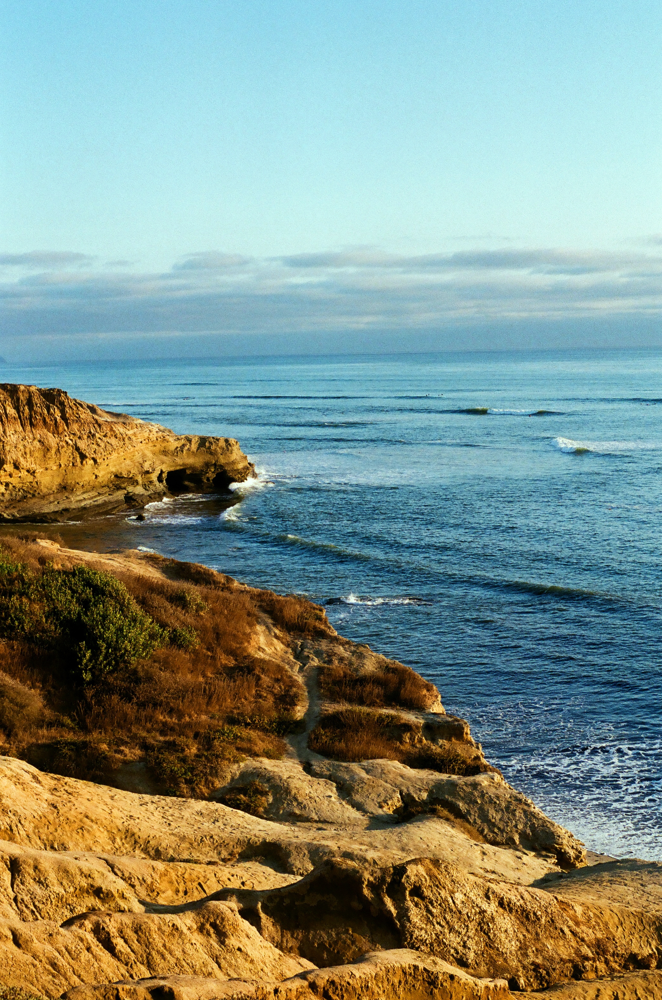
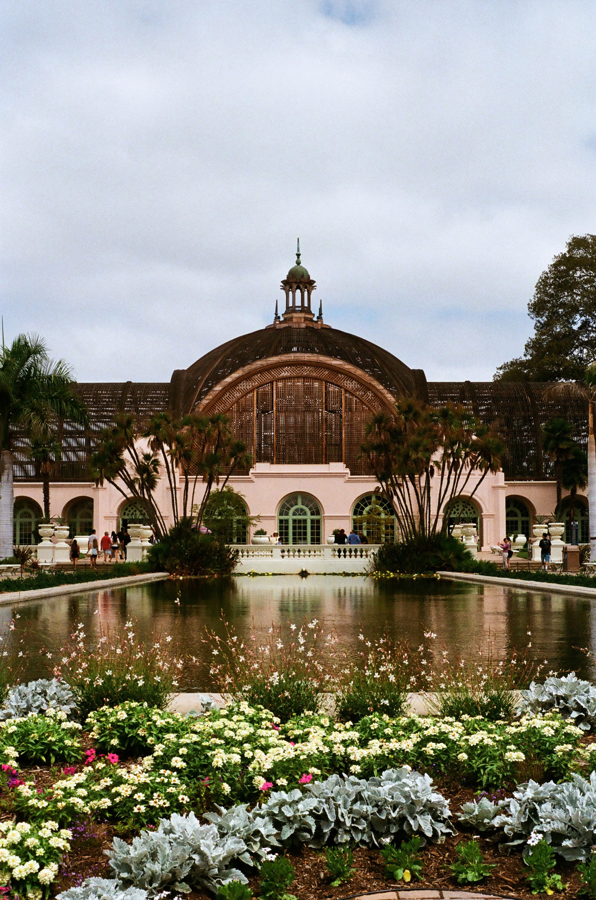
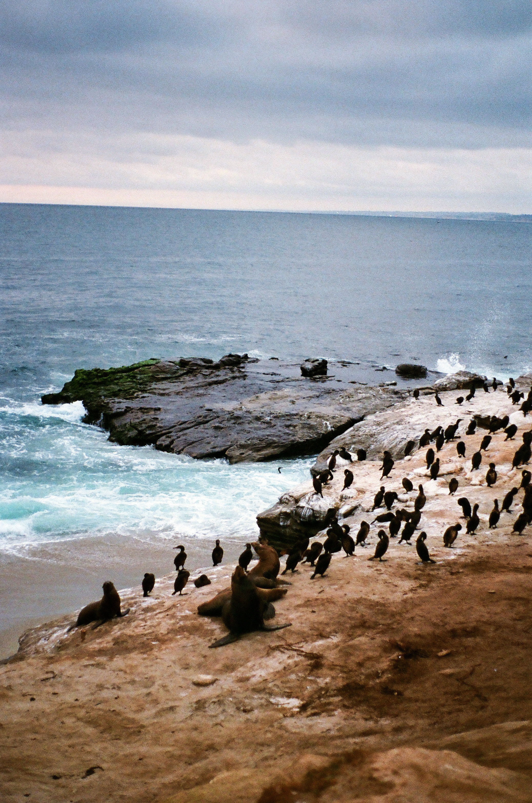
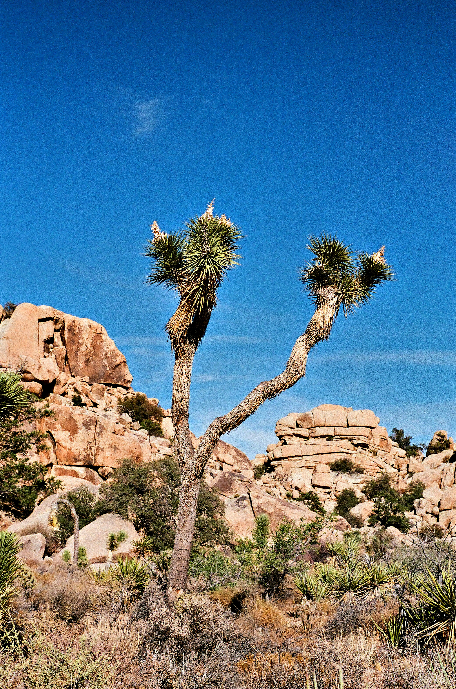
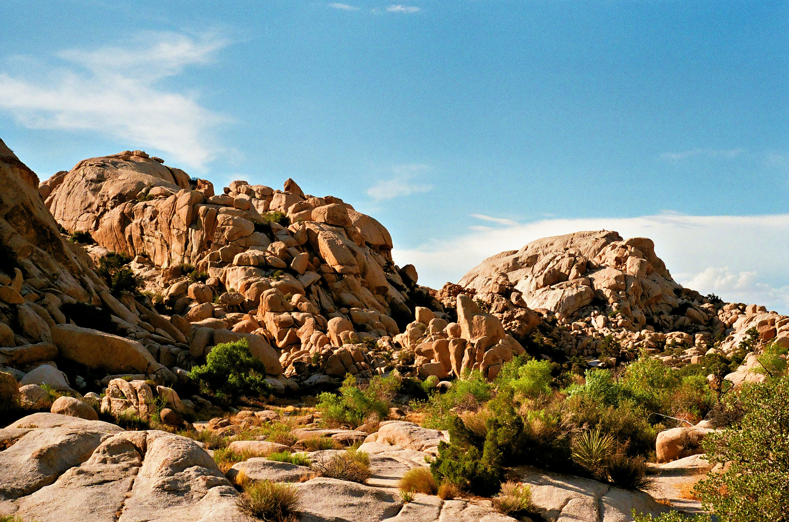
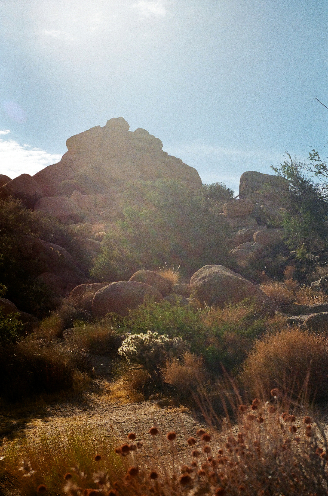
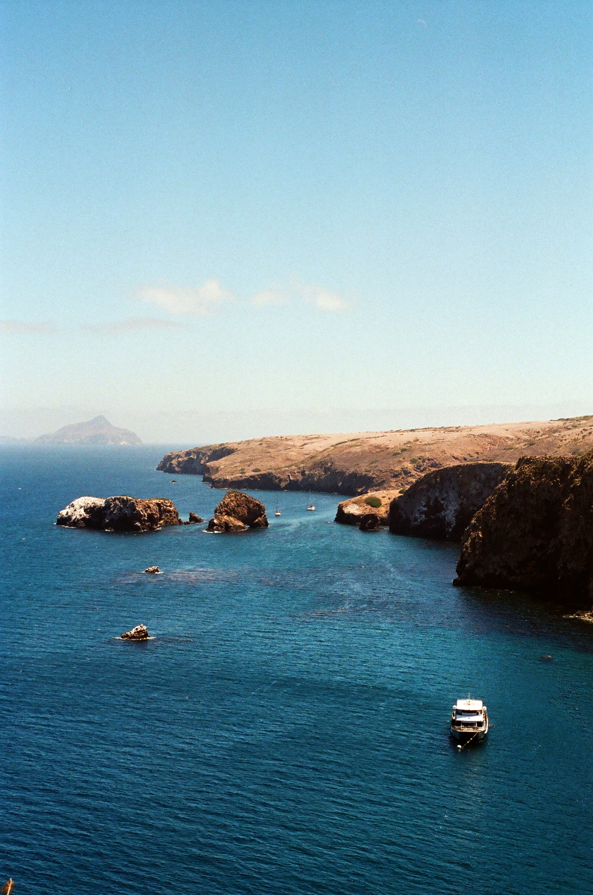
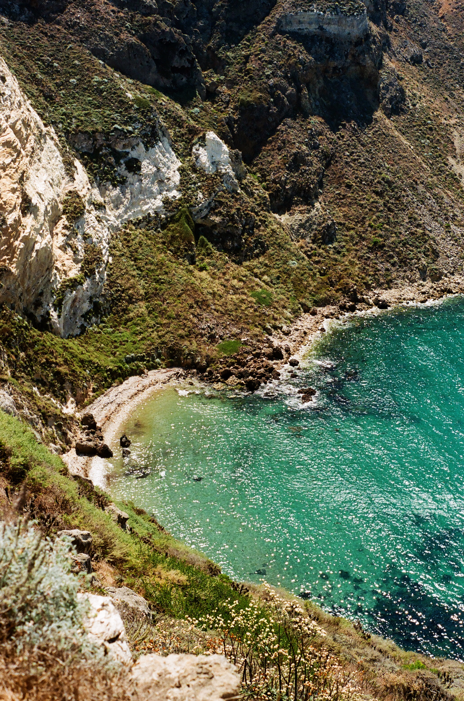
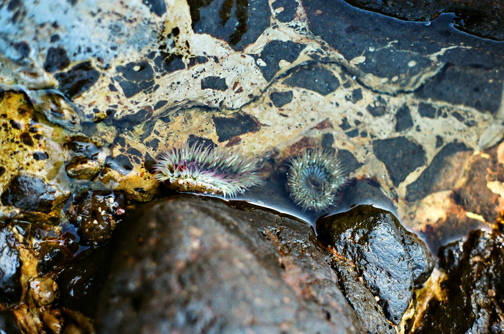

My California Adventure
California is a place I have always wanted to visit. On this trip, I got to experience three very different places: San Diego, Joshua Tree, and the Channel Islands. Each stop had its own unique scenery and things to explore. From the coast to the desert, this trip gave me plenty of opportunities to take photos and enjoy the outdoors.
San Diego
My first stop was San Diego. I enjoyed spending time near the ocean, exploring the city, and taking in the beautiful California weather. The weather was absolutely perfect. San Diego was a fun way to begin this trip!
Things to See and Do
If you're like me and enhjoy spending time outdoors, San Diego has so much to offer. There is an abundance of beautiful coastal scenery, with Torrey Pines State Natural Reserve being my favorite place to just sit and watch the waves. Like its name suggests, the park is full of rare Torrey pine trees, which are the rarest native pine species in the US.
Balboa Park has a beautiful main plaza and many gardens to walk around. We enjoyed the FREE Timken Museum of Art, which showcases a Rembrandt painting, Saint Bartholomew (1657). The Timken is just one of many museums in Balboa Park. There is also a beautiful conservatory here, as well as a global gift shop.
Lastly, the San Diego Zoo is a must-see. It is one of the largest zoos in the United States, as well as one of the nicest. The enclosures were amazing, and it features many animals you're not likely to see in other zoos. Only two zoos in the US have Giant Pandas, and that was my favorite exhibit. They also have Sun Bears, Wombats, and Bonobos, which help make this zoo different than any other zoo I've visited.



Joshua Tree
Next, I traveled to Joshua Tree. The desert landscape was unlike anything I've ever seen before. I enjoyed seeing the unique rock formations and Joshua trees throughout the park. The temperature was in the high 90s while we were there, but thankfully there was a breeze!
Things to See and Do
We hiked several trails at Joshua Tree National Park. All of them were very easy, flat trails, which was a relief given the heat. Joshua Tree is another National Park that you can explore sufficiently in just one or two days.
The Barker Dam trail was an easy 1.5 mile loop that features The Barker Dam. It was dry during our visit, but it was still interesting to see a historic dam. There is also a lot of information signs along this trail for those interested in learning more about the landscape and history of the area!
The Discovery Trail is another easy 1 mile loop that features two famous rock features (Skull Rock and Face Rock), aptly named because that's what they look like! Another trail in this area, Split Rock Loop, is a 2.5 mile loop that showcases the boulder called Split Rock, appropriately named because it is split right down the middle.



Visit the official Joshua Tree National Park website for maps, hiking information, and visitor updates.
Channel Islands
My final stop was the Channel Islands. We took a ferry to Santa Cruz island and camped for the night. Santa Cruz offered beautiful ocean views and a peaceful, slow setting to relax in.
Wildlife and Scenery
There is a species of fox here called the Channel Islands fox. They are only found on the Channel Islands! They were very mischievous and not afraid of people, so they were so much fun to observe. It was definitely my favorite part of the whole trip! There are also areas with tidepools, and during low tide, you can find many types of coastal wildlife such as crabs and sea anemones.
Things to See and Do
There are several islands you can visit, but Santa Cruz is the most popular. I highly recommend camping here, but you can also just take a day trip if you'd like. We hiked the Potato Harbor trail, which is a 5.3 mile out-and-back trail to the beautiful green waters of Potato Harbor. The overlook here was gorgeous, and you follow along the coastal cliffs almost the entire way.



Plan Ahead
- Book ferry transportation and campsites ahead of time.
- Bring all the food, water, and supplies you will need.
- Pack carefully because you will need to carry your gear.
- Check the weather and boat schedules before your trip.
The islands are only reached by ferry or private boat, so a little extra planning is important. Visitors should also be prepared for limited services and cell phone reception.
Learn more on the official Channel Islands National Park website .
More Adventures to Come
California was just one of many places I hope to explore. Check out my bucket list to see where I would like to travel next!
View My Bucket List